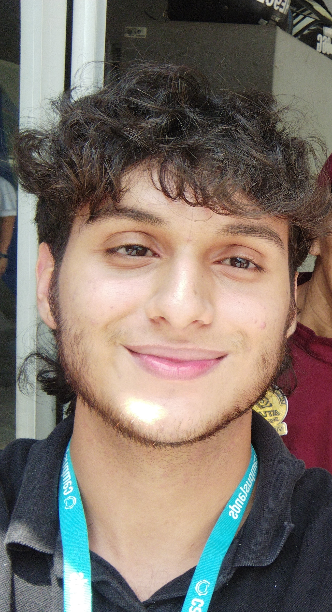

Informacion Personal
Número telefónico:
3204496489
Correo:
juanda.c0512@gmail.com
Identificación:
1099740117
Dirección:
cl. 7 #7-50
Estudios
Tecnico Bachiller: Colegio Reggio Amelia Curso de ingles Universdiad Industrial de Santander (B1)
Habilidades
Programación: Python, VexIQ Idiomas: Español, Ingles Habilidades: Trabajo en equipo, Manejo del estres, Comunicación efectiva, Pensamiento crítico
Proyectos
Mi objetivo es terminar mi tiempo
en Campuslands, aprovechando al máximo
cada aprendizaje y cada desafío que
se presente. Estoy buscando conseguir
un trabajo que no solo me permita ganar
experiencia práctica en el campo que estudio,
sino que también me ayude a crecer
profesionalmente mientras sigo con mis estudios
universitarios. La idea es que cada tarea,
cada proyecto que tome, sume a mi carrera y
me prepare para lo que viene.
No quiero limitarme solo a lo académico, sino vivir
la experiencia laboral desde ahora. Con todo eso,
mi próximo paso será hacer una especialización,
algo que me dé las herramientas y el conocimiento
avanzado para destacar en mi campo, ser un
experto en lo que hago y estar siempre un paso adelante.
El futuro es mío, y voy a aprovechar cada oportunidad
para lograr mis metas.